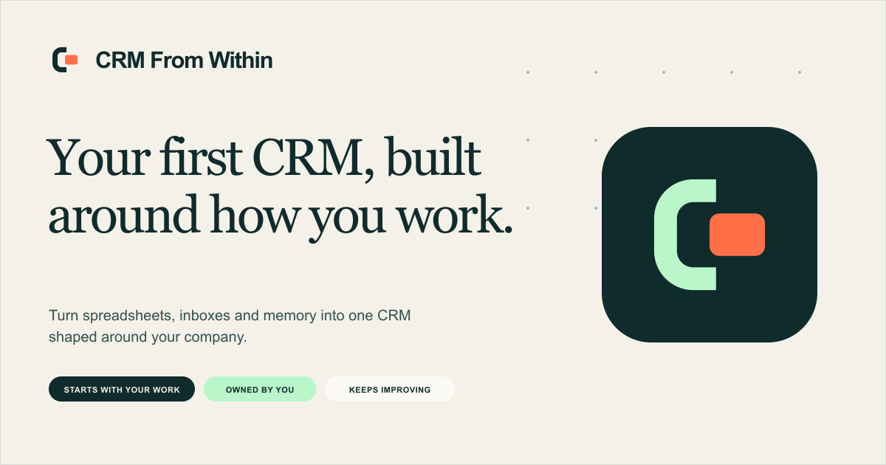
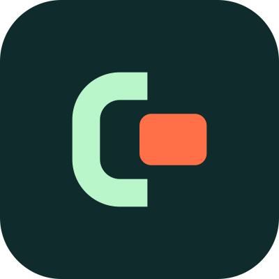
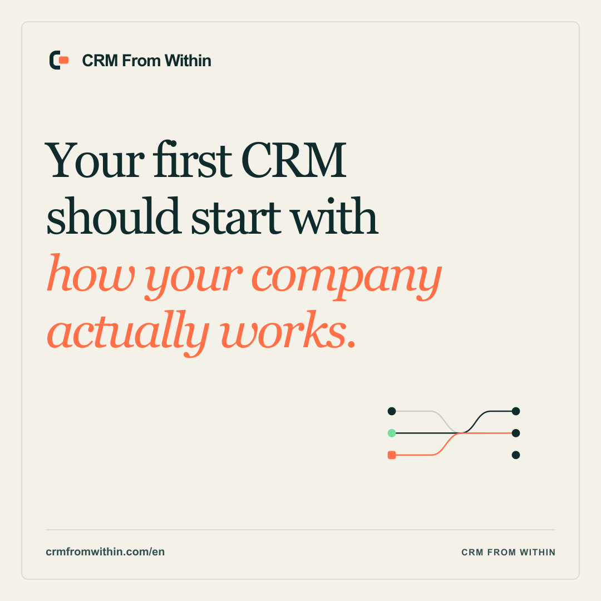

The brand system for CRM From Within: one identity for the hands-on service today and the self-builder vision it is creating.
The belief
CRM From Within learns how a small company follows leads, customers and follow-up, then builds the first useful CRM around that work. Customers leaving an existing CRM can add paid migration and deeper customization.
Turn spreadsheets, inboxes and memory into one clear system. Improve it with the people who use it.
Leads, customer history and follow-up live in spreadsheets, inboxes, chat and people’s heads.
The build begins with how the team already sells, delivers and serves customers—not a blank configuration screen.
The system removes work, reflects the company’s own process and remains owned by the customer.
Founders, CEOs and commercial or operations leaders at SMEs that do not yet have a CRM. They are relying on spreadsheets, inboxes, chat and memory.
Secondary audience: SMEs that want out of an existing CRM. Build the replacement first; offer migration and customization as paid services.
POSITIONING AND MESSAGE
BILINGUAL CORE LANGUAGE
Language rule: Write the proper name exactly as “CRM From Within.” Do not turn it into a generic category. Explain the idea in ordinary language beside the name.
05VOICE
Name the real action: observe usage, remove work, build, migrate, train and improve. Explain internal methods only when they add trust.
Talk like an experienced operator who understands people. Avoid playful AI language, mascots and exaggerated friendliness.
State the larger belief clearly, then connect it to the first CRM workflow the customer needs today.
Use proof, ownership and process. Do not promise impossible timelines, perfect automation or automatic business results.
We start with one useful improvement in your current setup. Your team gets value immediately while we learn how the work really happens.
Our revolutionary autonomous AI platform transforms your entire revenue engine with seamless next-generation intelligence.
THE COREMARK
The open frame is structured but not closed. It protects the company’s operating logic while leaving room for continuous change. The coral core stays specific, warm and unmistakably central.
The symbol is not a literal C, plug, portal or AI icon. Those readings may appear, but the controlled meaning is always “the system fits the company.” Use the lockup when the audience may not know the name.
07LOGO SYSTEM
Primary lockup on Warm Paper, Cream or white.
Reverse lockup on Within Ink or dark photography.
Keep at least one coral-core height around every side of the mark or lockup.
Mark: 16 px digital or 5 mm print. Lockup: 120 px digital or 32 mm print.
Use the dark square icon for avatars, favicons and app icons. Do not force the wordmark in.
Use the monochrome SVG only when production cannot reproduce the core colors.
Never: stretch, rotate, add glow, add a gradient, recolor individual parts, put the mark in another shape, reconstruct it with text, or return to the CN monogram.
08COLOR
Ratio: aim for roughly 80% Paper/Cream, 15% Ink and 5% Mint/Coral. Dark sections can invert this, but coral remains rare.
Accessibility: Within Ink is the default text color on Paper, Mint and Coral. White is for Ink and Deep Evergreen only.
TYPE AND LAYOUT
Use for headlines, key statements and pull quotes. Keep line lengths short. Sentence case only.
Layout: Use generous margins, visible alignment and one dominant idea per screen. Prefer bordered modules and process paths to floating cards. Do not fill empty space with decoration.
10IMAGERY, DIAGRAMS AND ICONS
Show real people in their working context, natural light and honest environments. Avoid staged laptop smiles and futuristic control rooms.
Use clean paths, modules and one warm core. Every line should help explain a decision, handoff or version.
Use 1.5-2 px line icons with rounded joins. No mixed icon styles, 3D icons, emoji or decorative tech symbols.
AI-generated imagery: It may illustrate an idea, but must never imply a real customer, implementation or measured result. Keep the final marketing system primarily typographic until real customer evidence is available.
11READY-TO-USE ASSETS



LinkedIn and X avatars plus platform-safe banners.
Website open-graph card and English/Swedish launch posts.
English/Swedish one-pagers, presentation cover, proposal cover and assessment cover.
THE REFERENCE-CUSTOMER KIT
Website hero, first-CRM story, proof and conversational starting-point plan.
Company avatar, cover and one founder-led launch post in the reader’s language.
Send the matching one-pager, then point to the assessment rather than attaching a long deck.
Use the presentation cover and website process. Spend the meeting on their workflow, not our slides.
Return the plan in the branded template with one concrete first workflow.
Use the proposal cover and repeat the build scope, ownership and—only when relevant—the paid migration path.
Use the lightweight HTML signature. Never turn every email into a banner ad.
Replace generic explanation with real outcomes as customers approve case studies.
Paid-ad systems, event collateral, merchandise and a large image library can wait. The first approximately five reference customers should teach us which proof, industry examples and objections deserve permanent assets.
FROZEN VERSION 2.0
The name, Coremark, primary colors, typography and brand architecture are frozen. Change them only when real customer behavior reveals a material problem.
Owner: CRM From Within
Primary source: this guide and the SVG masters in the brand kit
Review trigger: evidence from sales conversations, plans, customer use or accessibility - not novelty